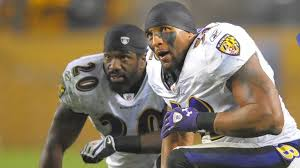
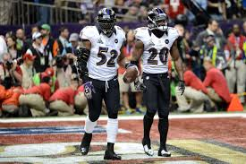

After the controversial relocation of the Colts to Indianapolis, several attempts were made to bring an NFL team back to Baltimore. In 1993, ahead of the 1995 league expansion, the city was considered a favorite, behind only St. Louis, to be granted one of two new franchises.League officials and team owners feared litigation due to conflicts between rival bidding groups if St. Louis was awarded a franchise, and in October Charlotte, North Carolina was the first city chosen. Several weeks later, Baltimore's bid for a franchise—dubbed the Baltimore Bombers, in honor of the locally produced Martin B-26 Marauder bomber—had three ownership groups in place and a state financial package which included a proposed $200 million, rent-free stadium and permission to charge up to $80 million in personal seat license fees. Baltimore, however, was unexpectedly passed over in favor of Jacksonville, Florida, despite Jacksonville's minor TV market status and that the city had withdrawn from contention in the summer, only to return with then-Commissioner Paul Tagliabue's urging.Although league officials denied that any city had been favored, it was reported that Taglibue and his longtime friend Washington Redskins owner Jack Kent Cooke had lobbied against Baltimore due to its proximity to Washington, D.C., and that Taglibue had used the initial committee voting system to prevent the entire league ownership from voting on Baltimore's bid. This led to public outrage and the Baltimore Sun describing Taglibue as having an "Anybody But Baltimore" policy. Maryland governor William Donald Schaefer said afterward that Taglibue had led him on, praising Baltimore and the proposed owners while working behind-the-scenes to oppose Baltimore's bid.

